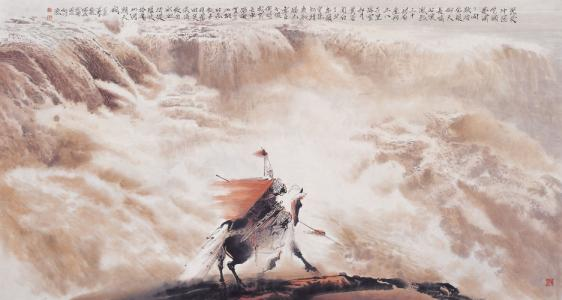

满江红·写怀
岳飞 〔宋代〕
怒发冲冠，凭栏处、潇潇雨歇。抬望眼，仰天长啸，壮怀激烈。三十功名尘与土，八千里路云和月。莫等闲，白了少年头，空悲切！
靖康耻，犹未雪。臣子恨，何时灭！驾长车，踏破贺兰山缺。壮志饥餐胡虏肉，笑谈渴饮匈奴血。待从头、收拾旧山河，朝天阙。
靖康耻，犹未雪。臣子恨，何时灭！驾长车，踏破贺兰山缺。壮志饥餐胡虏肉，笑谈渴饮匈奴血。待从头、收拾旧山河，朝天阙。
译文及注释
译文：
我愤怒得头发竖了起来，帽子被顶飞了。独自登高凭栏远眺，骤急的风雨刚刚停歇。抬头远望天空，禁不住仰天长啸，一片报国之心充满心怀。三十多年来虽已建立一些功名，但如同尘土微不足道，南北转战八千里，经过多少风云人生。好男儿，要抓紧时间为国建功立业，不要空空将青春消磨，等年老时徒自悲切。
靖康之变的耻辱，至今仍然没有被雪洗。作为国家臣子的愤恨，何时才能泯灭！我要驾着战车向贺兰山进攻，连贺兰山也要踏为平地。我满怀壮志，打仗饿了就吃敌人的肉，谈笑渴了就喝敌人的鲜血。待我重新收复旧日山河，再带着捷报向国家报告胜利的消息！
靖康之变的耻辱，至今仍然没有被雪洗。作为国家臣子的愤恨，何时才能泯灭！我要驾着战车向贺兰山进攻，连贺兰山也要踏为平地。我满怀壮志，打仗饿了就吃敌人的肉，谈笑渴了就喝敌人的鲜血。待我重新收复旧日山河，再带着捷报向国家报告胜利的消息！
注释：
怒发冲冠：气得头发竖起，以至于将帽子顶起。形容愤怒至极，冠是指帽子而不是头发竖起。
长啸：感情激动时撮口发出清而长的声音,为古人的一种抒情举动。
潇潇：形容雨势急骤。
三十功名尘与土：年已三十，建立了一些功名，不过很微不足道。
八千里路云和月：形容南征北战、路途遥远、披星戴月。
等闲：轻易，随便。
靖康耻：宋钦宗靖康二年（1127年），金兵攻陷汴京，虏走徽、钦二帝。
靖康耻：宋钦宗靖康二年（1127年），金兵攻陷汴京，虏走徽、钦二帝。
胡虏（lǔ）：对女真贵族入侵者的蔑称。
朝天（阙）：朝见皇帝。
天阙：本指宫殿前的楼观，此指皇帝生活的地方。
长啸：感情激动时撮口发出清而长的声音,为古人的一种抒情举动。
潇潇：形容雨势急骤。
三十功名尘与土：年已三十，建立了一些功名，不过很微不足道。
八千里路云和月：形容南征北战、路途遥远、披星戴月。
等闲：轻易，随便。
靖康耻：宋钦宗靖康二年（1127年），金兵攻陷汴京，虏走徽、钦二帝。
靖康耻：宋钦宗靖康二年（1127年），金兵攻陷汴京，虏走徽、钦二帝。
胡虏（lǔ）：对女真贵族入侵者的蔑称。
朝天（阙）：朝见皇帝。
天阙：本指宫殿前的楼观，此指皇帝生活的地方。
作品赏析
岳飞此词，激励着中华民族的爱国心。抗战期间这首词曲以其低沉但却雄壮的歌音，感染了中华儿女。
前四字，即司马迁写蔺相如“怒发上冲冠”的妙，表明这是不共戴天的深仇大恨。此仇此恨，因何愈思愈不可忍？正缘独上高楼，自倚阑干，纵目乾坤，俯仰六合，不禁热血满怀沸腾激昂。——而此时秋霖乍止，风澄烟净，光景自佳，翻助郁勃之怀，于是仰天长啸，以抒此万斛英雄壮志。着“潇潇雨歇”四字，笔致不肯一泻直下，方见气度渊静，便知有异于狂夫叫嚣之浮词矣。
开头凌云壮志，气盖山河，写来气势磅礴。再接下去，倘是庸手，有意耸听，必定搜索剑拔弩张之文辞，以引动浮光掠影之耳目——而乃于是却道出“三十功名尘与土，八千里路云和月”十四个字，真个令人迥出意表，怎不为之拍案叫绝！此十四字，微微唱叹，如见将军抚膺自理半生悲绪，九曲刚肠，英雄正是多情人物，可为见证。功名是我所期，岂与尘土同轻；驰驱何足言苦，堪随云月共赏。（此功名即勋业义，因音律而用，宋词屡见）试看此是何等胸襟，何等识见！
过片前后，一片壮怀，喷薄倾吐：靖康之耻，指徽钦两帝被掳，犹不得还；故下言臣子抱恨无穷，此是古代君臣观念之必然反映，莫以现代之国家观念解释千年往事。此恨何时得解？功名已委于尘土，三十已去，至此，将军自将上片歇拍处“莫等闲、白了少年头，空悲切”之痛语，说与天下人体会。沉痛之笔，字字掷地有声！
以下出奇语，寄壮怀，英雄忠愤气概，凛凛犹若神明。盖金人猖獗，荼毒中原，止畏岳家军，不啻闻风丧胆，故自将军而言，“匈奴”实不难灭，踏破“贺兰”，黄龙直捣，并非夸饰自欺之大言也。“饥餐”、“渴饮”一联微嫌合掌；然不如此亦不足以畅其情、尽其势。未至有复沓之感者，以其中有真气在。
有论者设：贺兰山在西北，与东北之黄龙府，千里万里，有何交涉？那克敌制胜的抗金名臣老赵鼎，他作《花心动》词，就说：“西北欃枪未灭，千万乡关，梦遥吴越。”那忠义慷慨寄敬胡铨的张元干，他作《虞美人》词，也说：“要斩楼兰三尺剑，遗恨琵琶旧语！”这都是南宋初期的爱国词作，他们说到金兵时，均用“西北”、“楼兰”（汉之西域鄯善国，傅介子计斩楼兰王，典出《汉书·西域传》），可见岳飞用“贺兰山”和“匈奴”，是无可非议的。
“待从头、收拾旧山河，朝天阙！”满腔忠愤，丹心碧血，倾出肺腑。即以文学家眼光论之，收拾全篇，神完气足，无复毫发遗憾，诵之令人神旺，令人起舞！然而岳飞头未及白，金兵自陷困境，由于奸人谗害，宋皇朝自弃战败。“莫须有”千古奇冤，闻者发指，岂复可望眼见他率领十万貔貅，与中原父老齐来朝拜天阙哉？悲夫。
此种词原不应以文字论长短，然即以文字论，亦当击赏其笔力之沉厚，脉络之条鬯，情致之深婉，皆不同凡响，倚声而歌，乃振兴中华之必修音乐艺术课也。
前四字，即司马迁写蔺相如“怒发上冲冠”的妙，表明这是不共戴天的深仇大恨。此仇此恨，因何愈思愈不可忍？正缘独上高楼，自倚阑干，纵目乾坤，俯仰六合，不禁热血满怀沸腾激昂。——而此时秋霖乍止，风澄烟净，光景自佳，翻助郁勃之怀，于是仰天长啸，以抒此万斛英雄壮志。着“潇潇雨歇”四字，笔致不肯一泻直下，方见气度渊静，便知有异于狂夫叫嚣之浮词矣。
开头凌云壮志，气盖山河，写来气势磅礴。再接下去，倘是庸手，有意耸听，必定搜索剑拔弩张之文辞，以引动浮光掠影之耳目——而乃于是却道出“三十功名尘与土，八千里路云和月”十四个字，真个令人迥出意表，怎不为之拍案叫绝！此十四字，微微唱叹，如见将军抚膺自理半生悲绪，九曲刚肠，英雄正是多情人物，可为见证。功名是我所期，岂与尘土同轻；驰驱何足言苦，堪随云月共赏。（此功名即勋业义，因音律而用，宋词屡见）试看此是何等胸襟，何等识见！
过片前后，一片壮怀，喷薄倾吐：靖康之耻，指徽钦两帝被掳，犹不得还；故下言臣子抱恨无穷，此是古代君臣观念之必然反映，莫以现代之国家观念解释千年往事。此恨何时得解？功名已委于尘土，三十已去，至此，将军自将上片歇拍处“莫等闲、白了少年头，空悲切”之痛语，说与天下人体会。沉痛之笔，字字掷地有声！
以下出奇语，寄壮怀，英雄忠愤气概，凛凛犹若神明。盖金人猖獗，荼毒中原，止畏岳家军，不啻闻风丧胆，故自将军而言，“匈奴”实不难灭，踏破“贺兰”，黄龙直捣，并非夸饰自欺之大言也。“饥餐”、“渴饮”一联微嫌合掌；然不如此亦不足以畅其情、尽其势。未至有复沓之感者，以其中有真气在。
有论者设：贺兰山在西北，与东北之黄龙府，千里万里，有何交涉？那克敌制胜的抗金名臣老赵鼎，他作《花心动》词，就说：“西北欃枪未灭，千万乡关，梦遥吴越。”那忠义慷慨寄敬胡铨的张元干，他作《虞美人》词，也说：“要斩楼兰三尺剑，遗恨琵琶旧语！”这都是南宋初期的爱国词作，他们说到金兵时，均用“西北”、“楼兰”（汉之西域鄯善国，傅介子计斩楼兰王，典出《汉书·西域传》），可见岳飞用“贺兰山”和“匈奴”，是无可非议的。
“待从头、收拾旧山河，朝天阙！”满腔忠愤，丹心碧血，倾出肺腑。即以文学家眼光论之，收拾全篇，神完气足，无复毫发遗憾，诵之令人神旺，令人起舞！然而岳飞头未及白，金兵自陷困境，由于奸人谗害，宋皇朝自弃战败。“莫须有”千古奇冤，闻者发指，岂复可望眼见他率领十万貔貅，与中原父老齐来朝拜天阙哉？悲夫。
此种词原不应以文字论长短，然即以文字论，亦当击赏其笔力之沉厚，脉络之条鬯，情致之深婉，皆不同凡响，倚声而歌，乃振兴中华之必修音乐艺术课也。
创作背景
第一种说法：岳飞第一次北伐，即岳飞30岁出头时所作。第二种说法：公元1136年（绍兴六年）。绍兴六年，岳飞第二次出师北伐岳飞很快发现自己是孤军深入，既无援兵，又无粮草，不得不撤回鄂州（今湖北武昌）。此次北伐，岳飞壮志未酬，镇守鄂州时写下了千古绝唱的名词《满江红》。第三种说法：《满江红》创作的具体时间应该是在岳飞入狱前不久。